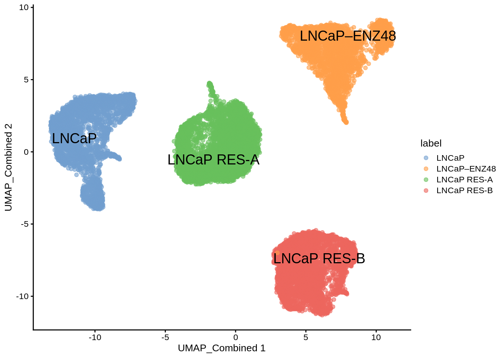

2 Quick start
In this chapter, we illustrate the epiregulon workflow, using the PBMC dataset which can be downloaded from the scMultiome package.
2.1 Prepare data
Prior to using epiregulon, single cell preprocessing needs to be performed by user’s favorite methods. The following components are required:
1. Peak matrix from scATAC-seq containing the chromatin accessibility information
2. Gene expression matrix from either paired or unpaired scRNA-seq. RNA-seq integration needs to be performed for unpaired dataset.
3. Dimensionality reduction matrix from with either single modalities or joint scRNA-seq and scATAC-seq
# load the MAE object
library(scMultiome)
library(epiregulon)
# Download the example dataset
mae <- scMultiome::PBMC_10x()
# Load peak matrix
PeakMatrix <- mae[["PeakMatrix"]]
# Load expression matrix
GeneExpressionMatrix <- mae[["GeneExpressionMatrix"]]Visualize singleCellExperiment by UMAP
scater::plotReducedDim(GeneExpressionMatrix,
dimred = "UMAP_RNA",
text_by = "cell_type",
colour_by = "cell_type",
point_size = 0.3,
point_alpha = 0.3)
2.2 Retrieve bulk TF ChIP-seq binding sites
First, we retrieve a GRangesList object containing the binding sites of all the transcription factors and co-regulators. These binding sites are derived from bulk ChIP-seq data in the ChIP-Atlas and ENCODE databases. For the same transcription factor, multiple ChIP-seq files from different cell lines or tissues are merged. For further information on how these peaks are derived, please refer to ?epiregulon::getTFMotifInfo. Currently, human genomes hg19 and hg38 and mouse mm10 are supported.
## GRangesList object of length 1377:
## $AEBP2
## GRanges object with 2700 ranges and 0 metadata columns:
## seqnames ranges strand
## <Rle> <IRanges> <Rle>
## [1] chr1 9792-10446 *
## [2] chr1 942105-942400 *
## [3] chr1 984486-984781 *
## [4] chr1 3068932-3069282 *
## [5] chr1 3069411-3069950 *
## ... ... ... ...
## [2696] chrY 8465261-8465730 *
## [2697] chrY 11721744-11722260 *
## [2698] chrY 11747448-11747964 *
## [2699] chrY 19302661-19303134 *
## [2700] chrY 19985662-19985982 *
## -------
## seqinfo: 25 sequences from an unspecified genome; no seqlengths
##
## ...
## <1376 more elements>2.3 Link ATAC-seq peaks to target genes
Next, we try to link ATAC-seq peaks to their putative target genes. We assign a peak to a gene within a size window (default ±250kb) if the chromatin accessibility of the peak and expression of the target genes are highly correlated (default threshold 0.5). To compute correlations, we first create cell aggregates by performing k-means clustering on the reduced dimensionality matrix. To estimate the optimal number of cells per cluster we will run the function optimizeMetacellNumber.
set.seed(1010)
cellNum <- optimizeMetacellNumber(expMatrix = GeneExpressionMatrix,
peakMatrix = PeakMatrix,
exp_assay = "normalizedCounts",
peak_assay = "counts",
reducedDim = reducedDim(GeneExpressionMatrix, "LSI_RNA"),
BPPARAM = BiocParallel::SerialParam(progressbar = FALSE))cellNum object is now provided as an argument to calculateP2G.
set.seed(1010)
p2g <- calculateP2G(peakMatrix = PeakMatrix,
expMatrix = GeneExpressionMatrix,
reducedDim = reducedDim(GeneExpressionMatrix, "LSI_RNA"),
exp_assay = "normalizedCounts",
peak_assay = "counts")## Using epiregulon to compute peak to gene links...## Value of the paramater 'cellNum' has not been optimized. Considerrunning function 'optimizeMetacellNumber' and use output to set'cellNum'.## Creating metacells...
## Looking for regulatory elements near target genes...
## Computing correlations...
## | | | 0% | |== | 2% | |=== | 5% | |===== | 7% | |====== | 9% | |======== | 11% | |========== | 14% | |=========== | 16% | |============= | 18% | |============== | 20% | |================ | 23% | |================== | 25% | |=================== | 27% | |===================== | 30% | |====================== | 32% | |======================== | 34% | |========================= | 36% | |=========================== | 39% | |============================= | 41% | |============================== | 43% | |================================ | 45% | |================================= | 48% | |=================================== | 50% | |===================================== | 52% | |====================================== | 55% | |======================================== | 57% | |========================================= | 59% | |=========================================== | 61% | |============================================= | 64% | |============================================== | 66% | |================================================ | 68% | |================================================= | 70% | |=================================================== | 73% | |==================================================== | 75% | |====================================================== | 77% | |======================================================== | 80% | |========================================================= | 82% | |=========================================================== | 84% | |============================================================ | 86% | |============================================================== | 89% | |================================================================ | 91% | |================================================================= | 93% | |=================================================================== | 95% | |==================================================================== | 98% | |======================================================================| 100%
##
## | | | 0% | |============== | 20% | |============================ | 40% | |========================================== | 60% | |======================================================== | 80% | |======================================================================| 100%## DataFrame with 67644 rows and 10 columns
## idxATAC chr start end idxRNA target Correlation
## <integer> <character> <integer> <integer> <integer> <array> <matrix>
## 1 1 chr1 817086 817586 17 LINC00115 0.487936
## 2 10 chr1 897218 897718 30 HES4 0.464881
## 3 27 chr1 955434 955934 30 HES4 0.552958
## 4 27 chr1 955434 955934 33 AGRN 0.498275
## 5 29 chr1 959712 960212 31 ISG15 -0.398968
## ... ... ... ... ... ... ... ...
## 67640 159255 chrX 154799001 154799501 36414 DKC1 -0.378386
## 67641 159255 chrX 154799001 154799501 36415 MPP1 0.644579
## 67642 159255 chrX 154799001 154799501 36419 F8A1 -0.395646
## 67643 159256 chrX 154800772 154801272 36415 MPP1 0.610599
## 67644 159256 chrX 154800772 154801272 36419 F8A1 -0.393617
## p_val_peak_gene FDR_peak_gene distance
## <matrix> <matrix> <integer>
## 1 0.0397870 0.616636 9934
## 2 0.0456846 0.625393 102261
## 3 0.0248449 0.566187 44045
## 4 0.0366621 0.603988 64184
## 5 0.0247077 0.566187 40924
## ... ... ... ...
## 67640 0.0295832 0.578736 36259
## 67641 0.0118173 0.506844 5894
## 67642 0.0252025 0.566187 86846
## 67643 0.0158884 0.532984 4123
## 67644 0.0257158 0.568362 850752.4 Add TF motif binding to peaks
The next step is to add the TF binding information by overlapping regions of the peak matrix with the bulk chip-seq database. The output is a data frame object with three columns:
idxATAC- index of the peak in the peak matrixidxTF- index in the gene expression matrix corresponding to the transcription factortf- name of the transcription factor
## Computing overlap...## Success!## idxATAC idxTF tf
## 1 1 16 ATF1
## 2 1 17 ATF2
## 3 1 18 ATF3
## 4 1 21 ATF7
## 5 1 35 BRCA2
## 6 1 36 BRD42.5 Generate regulons
A data frame representing the inferred regulons is then generated. The data frame consists of several columns, including those indicating target genes, transcription factors, and regulatory elements indexed by their corresponding rows in the PeakMatrix.
## DataFrame with 8418612 rows and 12 columns
## idxATAC chr start end idxRNA target corr
## <integer> <character> <integer> <integer> <integer> <array> <matrix>
## 1 1 chr1 817086 817586 17 LINC00115 0.487936
## 2 1 chr1 817086 817586 17 LINC00115 0.487936
## 3 1 chr1 817086 817586 17 LINC00115 0.487936
## 4 1 chr1 817086 817586 17 LINC00115 0.487936
## 5 1 chr1 817086 817586 17 LINC00115 0.487936
## ... ... ... ... ... ... ... ...
## 8418608 159256 chrX 154800772 154801272 36419 F8A1 -0.393617
## 8418609 159256 chrX 154800772 154801272 36419 F8A1 -0.393617
## 8418610 159256 chrX 154800772 154801272 36419 F8A1 -0.393617
## 8418611 159256 chrX 154800772 154801272 36419 F8A1 -0.393617
## 8418612 159256 chrX 154800772 154801272 36419 F8A1 -0.393617
## p_val_peak_gene FDR_peak_gene distance idxTF tf
## <matrix> <matrix> <integer> <integer> <character>
## 1 0.039787 0.616636 9934 16 ATF1
## 2 0.039787 0.616636 9934 17 ATF2
## 3 0.039787 0.616636 9934 18 ATF3
## 4 0.039787 0.616636 9934 21 ATF7
## 5 0.039787 0.616636 9934 35 BRCA2
## ... ... ... ... ... ...
## 8418608 0.0257158 0.568362 85075 979 MNT
## 8418609 0.0257158 0.568362 85075 991 NFIA
## 8418610 0.0257158 0.568362 85075 1018 POLR2A
## 8418611 0.0257158 0.568362 85075 1020 POLR2AphosphoS5
## 8418612 0.0257158 0.568362 85075 1335 ZNF7662.6 Prune network (recommended)
Since our regulon is quite large, and likely contains many false connections, we will pass it through the pruning function.
2.7 Annotate regulon
Apart from pruning, the regulon can be annotated with metrics useful for further refinement. One such metric is the log fold change of gene expression in a specified group of cells compared to all other or a selected group. Before running addLogFC function we need to log-transform gene expression counts.
# add 'logcounts' assay
GeneExpressionMatrix <- scuttle::logNormCounts(GeneExpressionMatrix)
regulon.FC <- addLogFC(expMatrix = GeneExpressionMatrix,
clusters = GeneExpressionMatrix$cell_type,
regulon = pruned.regulon,
pval.type = "any",
sig_type = "FDR",
assay.type = "logcounts",
logFC_condition=c('Naive CD4+ T')
)
regulon.FCAnother way to annotate the regulon is to add information about the presence of a motif at the regulatory element. By default, a new column named motif will be appended to the regulon, with 1s in rows where a motif has been found that matches the declared transcription factor.
2.8 Calculate TF activity
Finally, the activities for a specific TF in each cell are computed by averaging expressions of target genes linked to the TF weighted by the test statistics of choice. Using the method argument to the addWeights function, the user may choose among correlation, mutual information, or Wilcoxon as the test statistic.
\[y=\frac{1}{n}\sum_{i=1}^{n} x_i * weights_i\]
where \(y\) is the activity of a TF for a cell,
\(n\) is the total number of targets for a TF,
\(x_i\) is the log count expression of target \(i\) where \(i\) in {1,2,…,n} and
\(weights_i\) is the weight of TF - target \(i\), calculated by running addWeights function.
regulon.w <- addWeights(regulon = pruned.regulon,
expMatrix = GeneExpressionMatrix,
exp_assay = "normalizedCounts",
peakMatrix = PeakMatrix,
peak_assay = "counts")## adding weights using wilcoxon...score.combine <- calculateActivity(expMatrix = GeneExpressionMatrix,
regulon = regulon.w,
mode = "weight",
method = "weightedMean",
exp_assay = "normalizedCounts",
normalize = FALSE)## Warning in calculateActivity(expMatrix = GeneExpressionMatrix, regulon =
## regulon.w, : Argument 'method' to calculateActivity was deprecated as of
## epiregulon version 2.0.0## calculating TF activity from regulon using weightedMean## aggregating regulons...## creating weight matrix...## calculating activity scores...## normalize by the number of targets...## 5 x 5 sparse Matrix of class "dgCMatrix"
## PBMC_10k#GGTTGCATCCTGGCTT-1 PBMC_10k#GGTTGCGGTAAACAAG-1
## ADNP 0.11379320 0.09052355
## AEBP2 0.03488950 0.06604866
## AFF1 0.09373167 0.08967789
## AFF4 0.11164763 0.10782789
## AGO1 0.09017644 0.07779564
## PBMC_10k#TGTTCCTCATAAGTTC-1 PBMC_10k#CGACTAAGTAACGGGA-1
## ADNP 0.11310774 0.07767001
## AEBP2 0.06581493 0.07258739
## AFF1 0.10807508 0.06184494
## AFF4 0.13602988 0.07292949
## AGO1 0.08892206 0.05903171
## PBMC_10k#CTGCTCCCAAGGTCCT-1
## ADNP 0.1201884
## AEBP2 0.0780261
## AFF1 0.1136837
## AFF4 0.1392258
## AGO1 0.0889592